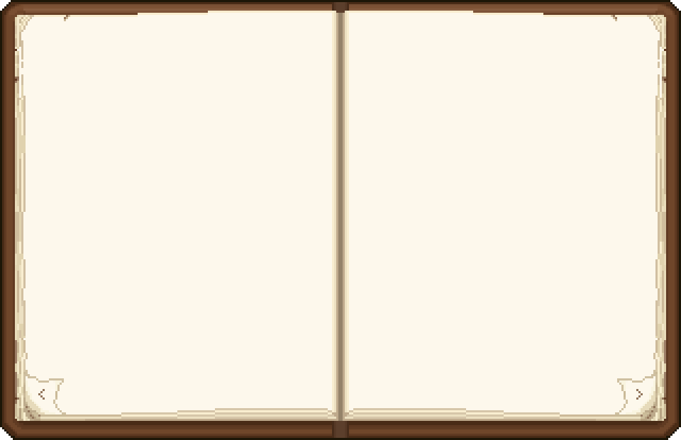

Alice
Ici ton texte de page gauche. Tu peux mettre une présentation, des infos de lore, une citation, ce que tu veux.
Le texte restera placé sur la page même si la fenêtre change de taille.
Détails
Âge, rôle, relations, anecdotes, playlist, esthétique…
Si le contenu est trop long, cette zone pourra scroller indépendamment.